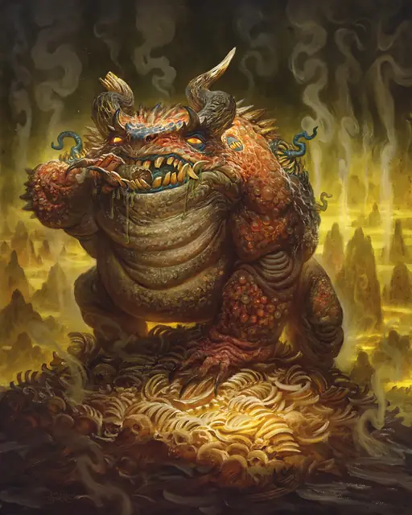

Хезроу
Hezrou
Большое Исчадие (Демон), Хаотичное Злое

Класс Защиты 18 Инициатива +6 (16)
Хиты 157 (15к10 + 75)
Скорость 30 футов
| мод | спас | ||
|---|---|---|---|
| СИЛ | 19 | +4 | +7 |
| ЛОВ | 17 | +3 | +3 |
| ТЕЛ | 20 | +5 | +8 |
| мод | спас | ||
|---|---|---|---|
| ИНТ | 5 | −3 | −3 |
| МДР | 12 | +1 | +4 |
| ХАР | 13 | +1 | +1 |
Сопротивление урону Огонь, Холод, Электричество
Иммунитеты Яд; Отравленный
Чувства Тёмное зрение 120 футов, пассивное Восприятие 11
Языки Бездны, Телепатия 120 фт.
Опасность 8 (3 900 опыта; БВ +3)
Особенности
Восстановление демона. Когда хезроу умирает за пределами Бездны, его тело растворяется в ихоре и в тот же миг заново возрождается со всеми Хитами где-то в Бездне.
Сопротивление магии. Хезроу совершает с Преимуществом спасброски от заклинаний и прочих магических эффектов.
Смрад. Спасбросок Телосложения: Сл 16, любое существо, начинающее свой ход в 10-футовой Эманации, исходящей от хезроу. Провал: Цель становится Отравленной до начала своего следующего хода.
Действия
Мультиатака. Хезроу совершает три атаки Раздиранием.
Раздирание. Бросок рукопашной атаки: +7, досягаемость 5 фт. Попадание: 6 (1к4 + 4) Рубящего урона плюс 9 (2к8) урона Ядом.
Бонусные действия
Скачок. Хезроу прыгает на расстояние вплоть до 30 футов, затрачивая 10 футов перемещения.
Бонус мастерства +3
Среда обитания Бездна
Сокровища Любые
Хезроу
Демон мерзости и буйства
Хезроу составляют костяк многих демонических орд. Огромные, размером с огра, эти громилы надвигаются квакающей, смердящей толпой, стремясь крушить и пожирать врагов. Их сочащаяся влагой шкура — само воплощённое зло. Каждые несколько мгновений на склизкой коже проступают омерзительные мутации: ряды несочетаемых клыков, грибковые наросты, грубые очертания лиц. Эти жуткие черты возникают и тут же вновь тонут в бурлящей плоти.
Хезроу служат более могущественным демонам, например нальфешни и марилитам. Они сносят жестокость со стороны смертоносных владык, чтобы затем вымещать всё на бесчисленных дретчах и манах. Эта предсказуемая жестокость делает хезроу удобными звеньями в хаотической цепи демонического воинства.
Оказавшись на Материальном плане — или просто предоставленные сами себе, — хезроу безрассудно пускаются в разрушительные сиюминутные погромы. Лишь магия и страх перед сильнейшими способны обуздать их неистовство и направить к более далеко идущим целям. Могущественные заклинатели часто прибегают к гнусным методам принуждения, к заклинаниям вроде Магического круга и Планарных уз или к иной магии, чтобы подчинять хезроу.
Совершите бросок по таблице «Демонические поручения» для вдохновения или определите сами, для какого дела маг подчинил хезроу или сходного демона.
Демонические поручения
| 1к6 | Демон принуждён… |
| 1 | Вломиться в хранилище и украсть его содержимое. |
| 2 | Осквернить место богохульными знаками и демонической кровью. |
| 3 | Достать материалы для нечестивого ритуала. |
| 4 | Охранять место и убивать любого приблизившегося. |
| 5 | Выследить врага, круша всё, что встанет на пути. |
| 6 | Запугать кого-то, принудив к послушанию. |